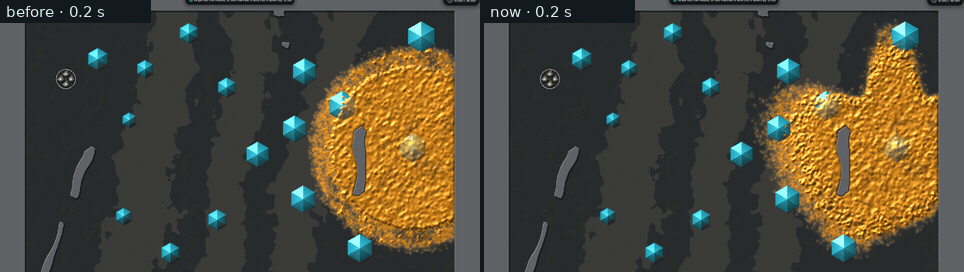
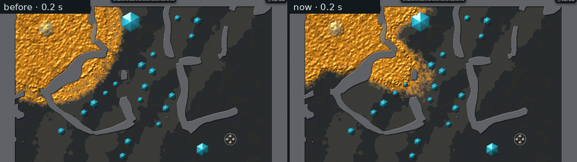
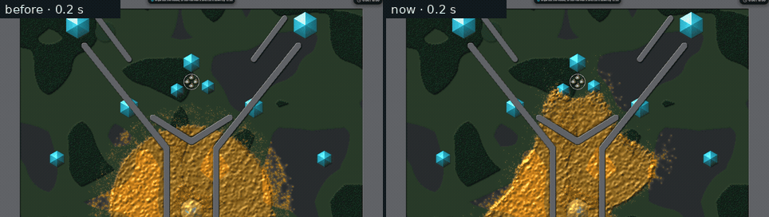

The mould's start: organic, not a disc
Planet review item 10: "every start is a perfect gold disc." Each film shows the start before (left) and now (right), from 0.2 s to 12 s, idle hand, seed 3.
Every Larder-world start now gets its own outline from the seed and its place on the map. It has lobes, a ragged rim and a denser middle, and covers the same area as the old disc. No mould is placed within 12 cells of the squad's landing. The walkers are the same simulation as before. Only where they start changed.



How round is it?
Test a_start_is_an_organic_shape_not_a_disc places 500 walkers on open ground and takes how far they reach in 24 directions. The figure below is how much that reach varies around the start. A circle is 0.
| Seed | Disc (before) | Organic (now) |
|---|---|---|
| 1 | 0.023 | 0.216 |
| 2 | 0.027 | 0.287 |
| 3 | 0.024 | 0.207 |
A first try at a quarter of this strength still read as a disc at the whole map's zoom. Four timing-sensitive tests that assumed the disc keep it or were retuned (see the report in Reports/organic-start-2026-11-15/).